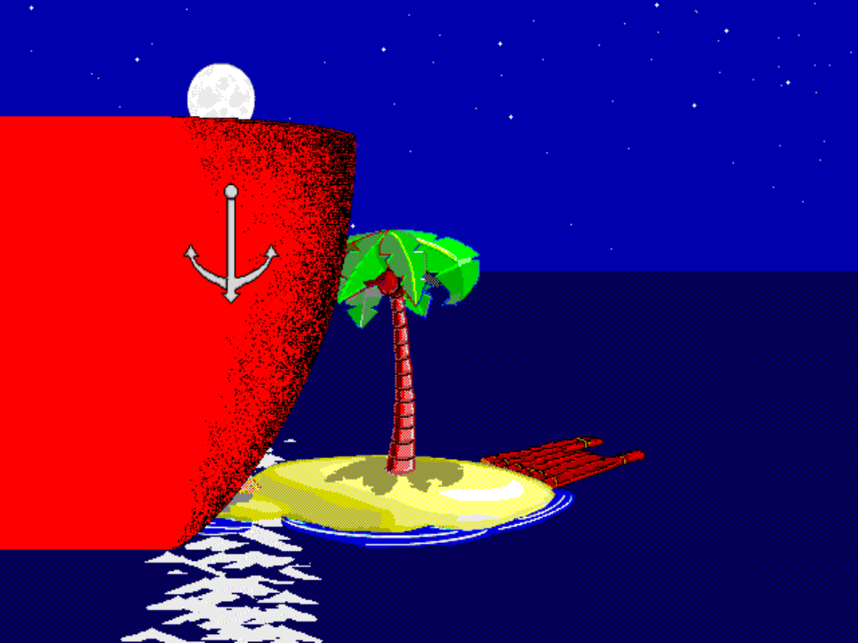

Scene · VISITOR 3 validated
VISITOR 3 — Waves down what looks like a small boat, but it's huge

Validated on 2026-05-04.
Pack identifiers
- ADS dispatch:
VISITOR.ADS scene 3 - Slug:
visitor3 - High-tide pack:
VISITOR3.FG2 - Low-tide pack:
VIST3LOW.FG2
What this scene is
Johnny spots a boat in the distance and starts waving it down, thinking it’s a small one nearby. The perspective gag reveals it’s actually a huge boat much further out — and the size flip plays for the laugh. Confirmed by direct on-PS1 playback observation while capturing the chapter-select thumbnail; the earlier “yacht couple, photos” caption-mapping guess was wrong (no couple or photo-taking in the on-PS1 pack).
Validation notes
VISITOR 3 is not a plain base-diff scene. The validated high/low packs use the standard normal, far-left, and far-right foreground-only capture set, then a VISITOR3-specific synthesis helper builds the foreground source:
- Foreground-only views keep the moving sprite pixels clean.
- Full-host frames contribute the red ship hull only during live crash frames.
- FGP3 temporal cleanup clears the post-crash blank rows instead of holding stale red.
- Hold timing keeps the real source frame-158 splash visible without replaying stale right-side splash residue.
Production island placement remains variable. The capture/test island positions were evidence-gathering positions, not runtime pins.
Notable runtime history
VISITOR 3 remains one of the high-leverage yellow-band rows on the
performance battle card at
v0.8.16-ps1. After the compact metadata work, motion-copy payloads,
high-only frame 117 target-hull promotion, the v214 high setup-prime pass,
the v216 guarded low second setup segment, the v227 low frame-125/frame-126
resident re-anchor, the v234/v237 low frame-118/frame-127 resident copies, the
v238 high frame-127/frame-130 resident-copy compaction, and the v248 low
frame-114/frame-117 no-op residual compaction, the v327 low resident-slot
swap, and the v338 low tail pack-only compaction, visitor3 high
and low now run around
96.6% and 97.1% target speed
instead of sitting in the red/orange bands.
Two of those experiment-version steps map cleanly to public release
tags: v0.8.2-ps1
was the first release tagged specifically at VISITOR 3 (guarded-read
performance pass), and
v0.8.6-ps1
landed the setup-segment resident copies for frames 131 / 128
on both tides. The internal vNNN
versions above are the
performance-experiment-log
sequence; the release tags are when batches of them shipped publicly. The wide multi-view stitch (the red ship
crossing the full scene width) hits the
prefetch window
harder than most scenes; the remaining timing gap is concentrated in the
ship’s live crash window and same-frame cleanup/restore work.
The arc that moved the rest of the matrix from 87.1% to 99.5%
target speed is at
/lab/from-87-to-99-5/.
The named-experiment queue for visitor3 lives in
docs/ps1/performance-experiment-log.md;
recent rejected probes include several read-group, slack-gated, and
setup-prime variants that didn’t beat the canary. The current source baseline
has also removed unused noncompact motion dispatch without moving timings; that
headroom is reserved for a future direct/precomposed VISITOR3 data path. Earlier
read-plan clusters are closed for local runtime changes too: grouped-read,
setup-owned persistent-segment, and data-only sector-alignment probes either
measured exact-flat or shifted CD phase and regressed both tide variants.